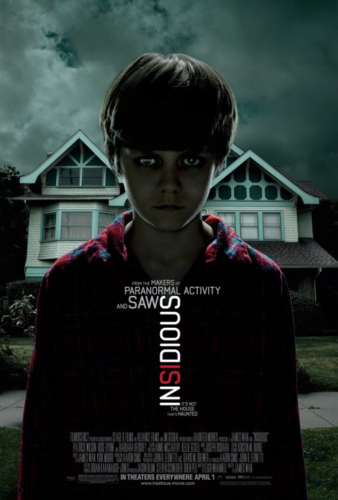
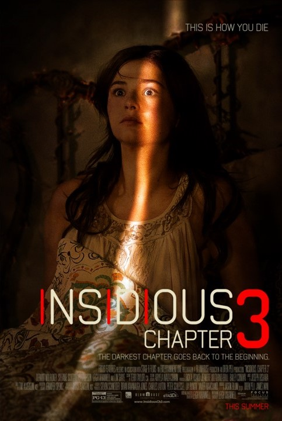
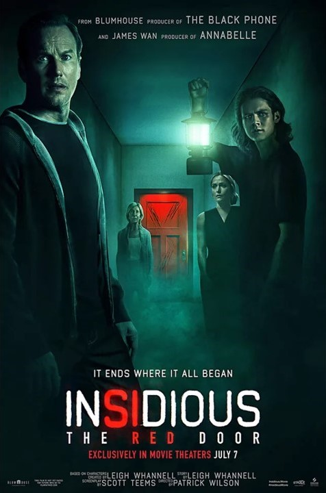

| 개봉년도 | qwerty |
| 러닝타임 | uiop |
| 감독 | asdfgh |
| 출연진 | jkl |

2011 인시디어스
조쉬 부부의 아들 달튼은 원인을 알 수 없는 혼수상태에 빠져버린다. 그 사이 집안을 감싸던 불길한 공기는 서서히 공포로 번져가고, 정체 모를 존재에 가족은 패닉 상태에 빠진다 1시간 41분 제임스 완 패트릭 윌슨, 로즈 번, 바바라 허쉬, 타이 심킨스 https://youtu.be/zuZnRUcoWos?si=6DUHkyaa8ls6y-4a
2013 인시디어스 : 챕터 2
악령에게 시달리는 아들을 간신히 구해낸 조쉬. 그러자 이번에는 끔찍했던 조쉬의 과거가 가족을 흔들어 놓는다. 조쉬는 어떤 비밀을 숨겨왔던 것일까. 1시간 46분 제임스 완 패트릭 윌슨, 로즈 번, 타이 심킨스 https://youtu.be/fBbi4NeebAk?si=4084eybZj6Tp5dO4

2015 인시디어스 : 챕터 3
죽은 엄마와 얘기하고 싶어 영매 엘리스를 찾아간 소녀 퀸. 그날 이후, 퀸에게 이상한 일들이 일어나기 시작한다. 환영인지 실재인지 모를 남자의 출몰, 알 수 없는 말을 건네는 이웃 할머니. 퀸을 위협하는 존재의 실체는 과연 무엇인가 1시간 37분 리 워넬 더멋 멀로니, 스테퍼니 스콧, 린 셰이 https://youtu.be/3HxEXnVSr1w?si=R3_Uz2R1_ocDRJ51

2023 인시디어스 : 빨간 문
조쉬 램버트와 그의 대학생 아들 달튼. 과거 가족을 괴롭히던 악령에 대한 기억이 되살아나면서 세대를 이어 계속되는 트라우마에 시달린다. 1시간 37분 패트릭 윌슨 패트릭 윌슨, 로즈 번, 바바라 허쉬, 타이 심킨스 https://youtu.be/ZuQuOnYnr3Q?si=aCWauV2jK_re4iXA